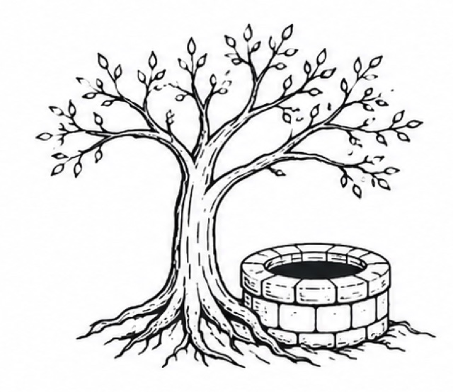

Output 03
mimir
A statistically rigorous experiment harness for LLMs and other stochastic systems.

00Abstract
Mimir guarded the well of wisdom under the world tree. Odin gave up an eye for one drink. Knowledge costs something, and the same goes for any stochastic system you can't judge by eyeballing a few outputs: a prompt, a randomized algorithm, a noisy benchmark, a policy.
mimir runs the experiment you describe in a YAML file and tells you whether the difference is real: paired bootstrap intervals, a sign-flip p-value, a power estimate, correction for multiple arms, and a report card on the LLM judge.
01Why
Two points of improvement is usually noise
You change a prompt, the score moves, you ship it. Sampling noise is often bigger than the effect, and an LLM judge adds position and length bias on top. mimir makes you state the hypothesis first, then does the statistics.
02How it works
Paired comparisons, exhaustive when n is small
Runs append to a SQLite file, and responses are cached by content, so re-running a spec only executes what changed. Every comparison is paired per item. The interval comes from 10,000 bootstrap resamples over items; the p-value from a sign-flip test, exhaustive up to 16 items (all 65,536 patterns), which is exactly where Monte Carlo error would be worst. The report estimates how many items you'd need for 80% power and splits variance into item effect versus replicate noise. Runs with more than two arms get Holm or Benjamini-Hochberg correction.
Preregistration is a hash
A spec that declares a hypothesis and an analysis plan gets a sha256 of both printed at run time. You can show later that the analysis wasn't chosen after seeing the data.
The judge gets audited too
audit-judge turns the same machinery on the judge and reports its position bias and length bias.
03Beyond LLMs
Any program that takes a seed and prints a score
The bundled example pre-registers that simulated annealing beats random-restart hill climbing on seeded knapsack instances: 192 samples, no API key.
$ uv run mimir run examples/non_llm/experiment.yaml --db knap.db run 20260804-021035-6678 complete samples: 192 (0 errors) | judgments: 192 (0 errors) preregistered: 717a237bb2f1... <- sha256 of hypothesis + analysis plan
04CLI
| mimir run SPEC [--mock] | run the experiment; prints the preregistration hash |
| mimir analyze RUN_ID [--html] | paired-bootstrap report, terminal or self-contained HTML |
| mimir audit-judge RUN_ID | judge reliability report card |
v0.1.0. Not on PyPI yet; install from source with uv. Python 3.12+. Depends on httpx, pydantic, pyyaml, numpy.